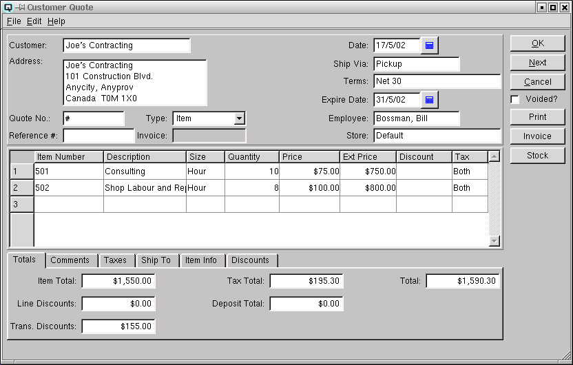
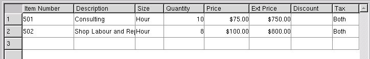
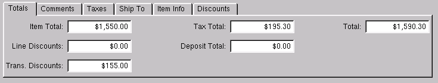
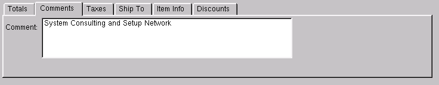
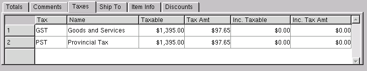
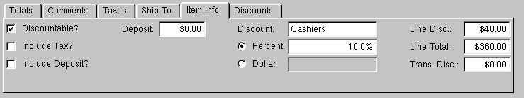
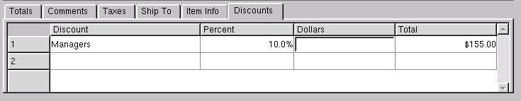

Customer Quote

Customer
The customer to whom the quote is being created.
Address
The address for the customer.
Quote No
Quasar automatically selects the next available quote number. The
user may over ride the quote number and enter a different number. If the
number entered is not unique and has been used before Quasar will display a
warning message at the time of filing the quote.
Reference #
Enter a customer reference number if one is provided by the
customer. For example, the customer may provide you with a purchase
order number of a job number.
Type
Select either item or account. Select item if the sales quote
will be used to sell or return items. Select account if the sales
quote will reflect a direct charge or credit to a ledger account.
Invoice
When and if the quote is converted to an invoice, the invoice
number is displayed.
Date
The quote date.
Ship Via
Enter the method of shipping the goods to the customer.
Terms
Enter the payment terms for this customer. An existing set of terms
may be used or a new set of terms may be defined. Payment terms
entered in the customer master screen will appear here by default. (More)
Expire Date
The date the goods were promised to be available and/or to be
delivered to the customer.
Salesperson
The card id of the employee or salesperson creating the quote.
Store
Select or change the default store. If a store has been
defined for the user, then the user's store will display by
default. If no store has been defined for the user, then the
default store specified in the "Quasar Configuration" will be
displayed.
Item Entry Table

Use this section to enter items on the customer quote.
-
- Item Number - The item number of the product or products being sold.
- Description - The description of the product or products
being sold.
- Size - The size of the item.
- Quantity - The quantity of products being sold. A positive
number entered indicates a product purchase. A negative number entered
indicates product a return.
- Price - The price per selling unit for each product being sold.
- Ext Price - The extended price for the items on the
line. The extended price is the gross extended price before discounts.
- Discount - If the discount is a percent discount then the
percentage will be displayed. If the discount is a dollar discount,
then the total dollar amount will be displayed. Line discounts are
selected in the "Item Info" folder.
- Tax - The selling tax code for the item. This is defaulted
from the data entered in item master window. However, the tax code may
be changed by the user.
Totals

The totals folder displays the various totals for the customer
quote:
-
- Item Total - The net item total before discounts and taxes.
- Line Discounts - The total of all line discounts.
- Trans Discounts - The total of all transaction discounts.
- Tax Total - The accumulated total of all taxes.
- Deposit Total - The total of all container deposits.
- Total - The gross total for the customer quote.
Comments

Any comments relevant to the invoice. All comments will be printed
on the hard copy of the customer quote.
Taxes

Quasar display a breakdown of the individual taxes.
-
- Tax - The tax id.
- Name - The name of the tax.
- Taxable - The net base amount that a given tax is charged to.
- Tax Amt - The amount of tax allocated to the "Taxable" amount.
- Inc. Taxable - The net base taxable amount including the amount of the tax. (for items with taxes included in the price)
- Inc. Tax Amt - The net amount of tax calculated from the "Inc. Taxable" amount.
Ship To

Where products are shipped to a card or address other than
the customers address the ship to address can be entered here. The
ship to address is printed on the hard copy of the customer invoice.
-
- Ship To - Enter or select a card if different
from the customer.
- Address - Enter the new shipping address.
Item Info

The item info folder displays specific information about an
individual item(line) in the invoice. The information displayed will
pertain to the line in which the cursor is placed. Line discounts are
taken using the item info folder.
-
- Discountable? - Displays whether or not a discount may be
taken on an item.
- Include Tax? - Displays if the price of the item includes
taxes.
- Include Deposit? - Displays if the price of the item
includes a container deposit.
- Tax - The accumulation of all taxes on the line.
- Deposit - The total of the container deposits on the
line.
- Discount - Select the discount for to take a line
discount.
- Percent - Toggle on or off. Toggle on if the line discount
will be a percentage discount.
- Dollar - Toggle on or off. Toggle on if the line discount
will be a dollar discount.
- Line Disc. - Displays the total amount of a line discount.
- Line Total - Displays the gross total for the line.
- Trans Disc. - Displays total amount of transaction
discounts allocated back to the line.
Discounts

The discounts folder is used to define transaction
discounts.
-
- Discount - Enter or select the discount id.
from the customer.
- Percent - Enter a percentage discount. For example "10%"
off.
- Dollars - Enter a dollar discount. For example, "$1.00"
off.
- Total - The total of the discount.
Voided?
Toggle on or off. Toggle off to void the invoice. Toggle on to
re-set the invoice to non-voided.
Print
Click on the print button to print a hard copy of the customer
invoice.
Invoice
Click on the "Invoice" button to create a customer invoice. The
act of creating a customer invoice sets the quote to an inactive
state.
Stock
Click on the "Stock" button to review the stock status of the item in
the line in which you are working